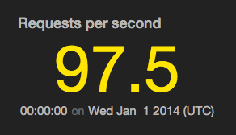
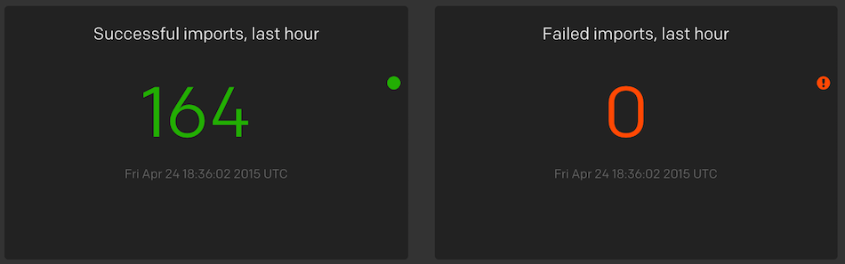
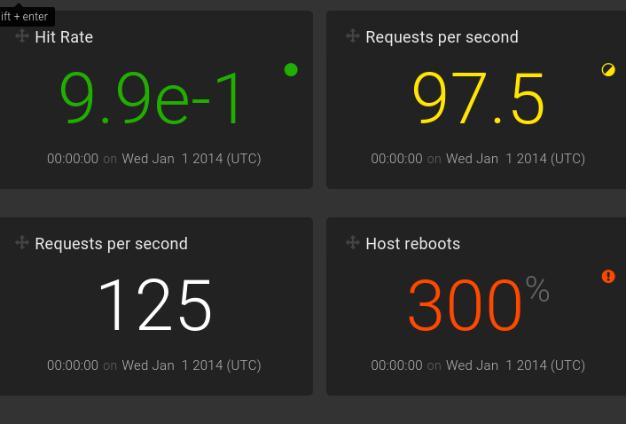
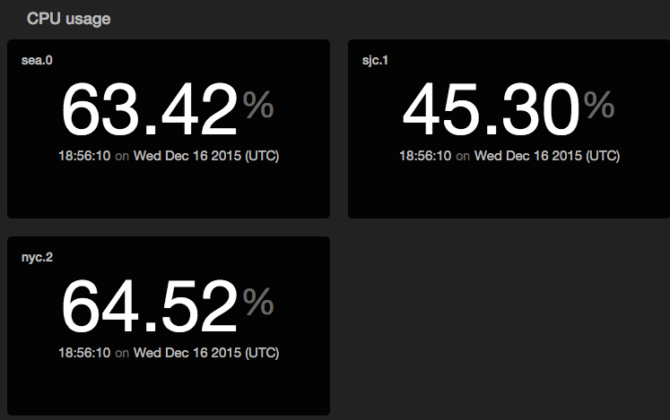

tile
Render a metric tile displaying exactly one value; can be faceted.

view tile -o {
id: 'string'
title: 'string'
levelField: 'fieldname',
valueField: 'fieldname',
valueFormat: 'd3FormatString',
timeField: 'fieldname',
facetFields: ['field1', 'field2'...]
}
or
view tile -id 'string' -title 'string'
-levelField 'fieldname' -valueField 'fieldname'
-valueFormat 'd3FormatString' -timeField 'fieldname'
-facetFields ['field1', 'field2'...]
See Defining sink parameters for an explanation of how sink parameters can be expressed as object literals.
| Parameter | Description | Required? |
|---|---|---|
-id |
An identifier for this sink that serves as a handle for referencing the object in Juttle syntax; conceptually identical to a variable name | No |
-title |
The title for the user-visible output, if it has one; the value may be any valid Juttle expression that produces a string | No; defaults to the name field that is present in all metrics points |
-levelField |
The name of a field whose value is one of the following:
|
No; the default display is white text with no icon |
-valueField |
The name of the field to use as the source for the numeric values | No; defaults to the value field that is present in all metrics points. If no value field is present, the first numeric field in the stream is used. |
-valueFormat |
The format for the tile value, using the d3 number formatting syntax | No |
-timeField |
The field containing the time stamp | No; defaults to the time field |
-facetFields |
A comma-separated list of the fields on which facets are based | Required to enable faceting; omit this option to disable facets |
Example: Simple metric tiles showing data import successes and failures
read stochastic -source 'cdn' -last :1 hour: -every :1m: -source_type 'metrics' name='responses'
| (
filter code = '200'
| reduce value = count()
| put level = 'success'
| view tile -title 'HTTP OK Responses' -display.levelField 'level'
;
filter code != '200'
| reduce value = count()
| put level = 'error'
| view tile -title 'HTTP Errors' -display.levelField 'level'
)

Example: Render four metric tiles color coded for different levels
sub fakesource(counter, level) {
emit -limit 1 -from :2014-01-01:
| put counter=counter, level = level
}
fakesource -counter 0.99 -level 'success'
| view tile -o {
title: 'Hit Rate',
valueFormat: 'e',
levelField: 'level',
valueField: 'counter'
};
fakesource -counter 97.5 -level 'warning'
| view tile -o {
title: 'Requests per second',
levelField: 'level',
valueField: 'counter'
};
fakesource -counter 125 -level 'info'
| view tile -o {
title: 'Requests per second',
valueField: 'counter'
};
fakesource -counter 3 -level 'error'
| view tile -o {
title: 'Host reboots',
valueFormat: 'p',
levelField: 'level',
valueField: 'counter'
};

Example: Display a faceted tile chart
// This Juttle program draws a tile visualization showing current, live updating CPU utilization per host.
// It uses a synthetic data source, but similar code can be used to view real reported CPU usage.
read stochastic -source 'cdn' -from :1 minute ago: -nhosts 3 -every :2s: -source_type 'metrics' name='cpu'
| view tile -facetFields ['host'] -title 'CPU usage' -valueField 'value' -valueFormat '.2%'
